Best loadouts in Helldivers II
Posted: 25/May/2026
Updated: 25/May/2026
HD II has a plethora of different weapons, utilities, and tools at your disposal, but which ones should you use and why? Everything mentioned on this list is available in the base game, meaning you won't have to buy any additional Warbonds to get access to anything on this list. Each list itself is formatted by item category: red (Orbital, Eagle, etc.) > green (Sentries, Mine Fields, etc.) > blue (Weapons, Backpacks, etc.). Other than that, the lists are in no chronological order.
I have divided this post into 2 parts:
Quintessential -- Things that are a must-have regardless of faction or mission.
Situational -- Things that can be really good, but only in very specific scenarios.
Quintessential
1. Orbital Napalm Barrage
Regardless of who you launch this attack against, rest assured that anything under its reign of fire will be efficiently wiped out, regardless of enemy class.
The napalm barrage has a very big area of effect, meaning you don't really have to predict where the nearby enemy will be at the time of impact. Additionally, the initial explosion as it makes contact with the ground is more than enough to wipe out most small enemies, but if anything survives that, the residual fire left burning behind will surely finish the job. Only the strongest of enemies can survive this nifty boy!
Its only downside is the fact it's locked behind Level 18 and 10000 Requisition Slips, which, depending on how much you play, might take a while to get to. Its cooldown is also 4 minutes, which is a bit of a bummer but understandable for balancing.
2. Orbital Walking Barrage
This useful son of a gun essentially trivializes most "Destroy the [insert structure]" missions. It can destroy outposts of all kinds, it can destroy Illuminate jammers, it can destroy Observers, and many more. And it is relatively easily unlockable at Level 10 and costs only 7500 Requisition Slips! Truly a magnificent piece of technology with little to no parallels to match.
The only downside is the fact it's a little hard to get it to actually hit what you want, since, unlike the napalm, this consists of individual explosions, so if the game just decides not to hit the objective, you're kind of out of luck. And similar to the napalm, its base cooldown is also 4 minutes, meaning if it doesn't wipe out the target first try, it might be better to just do it old school.
3.
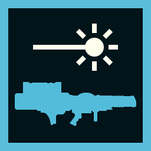
LAS-99 Quasar CannonInfinite ammo, massive damage, and it doesn't fill up the backpack slot; what more could you even need? It is easily capable of one-shotting basically everything if you hit the weak spot, and if you don't, then it's a two-shot.
Its only downsides are the somewhat steep Level 18 requirement and its 15 second cooldown between each shot.
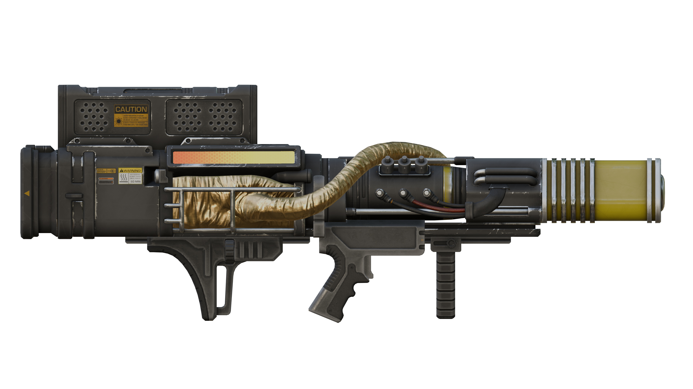
4.
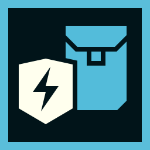
SH-32 Shield Generator PackUnlike the Ballistic Shield or the Directional Shield, this nifty thingy offers you 360-degree protection. Additionally, it can block all damage dealt, regardless of what kind, whether it be melee, bullet, or missile, meaning that if you, say, step on a mine, the shield will be destroyed instead of you. Once destroyed, it will be back in operation after 12 seconds. If you're anything like me, you're often too lazy to clear out the entire enemy base, and, instead, you just rush straight for the Terminal, which would usually result in you constantly getting interrupted, but with this shield equipped, it will buy you just enough time to insert the input and get out.
Its two main downsides are its relatively small health pool, which makes it less effective against many enemies at once and its unlock requirements, which are Level 20 and 10000 Requisition Slips.
5.
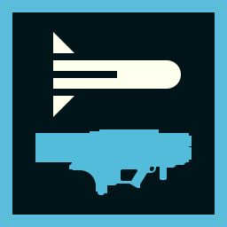
MLS-4X CommandoEasily unlockable at Level 15 and costing only 8000 Requisition Slips, this bad boy is probably the best tool to use against small enemies and enemies that tend to move around a lot, because the missiles here actually follow where you're aiming.
But remember, you only get 4 shots, so make them count!
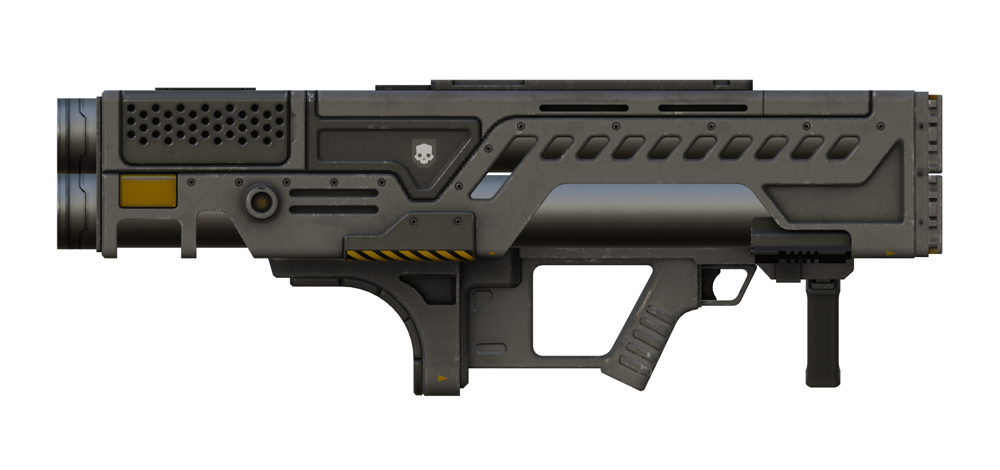
6.
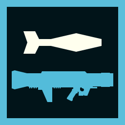
GR-8 Recoilless RifleHonestly, forget everything else! You can unlock this at Level 5 for only 6000 Requisition Slips, and it is genuinely one of the best weapons in the game. With the ability to basically one-shot most heavy things and the fact you can resupply its ammo reserves, this is one of, if not the best, weapons to bring with you.
Just keep in mind that its reload is stationary and can hold only 1 round at a time.
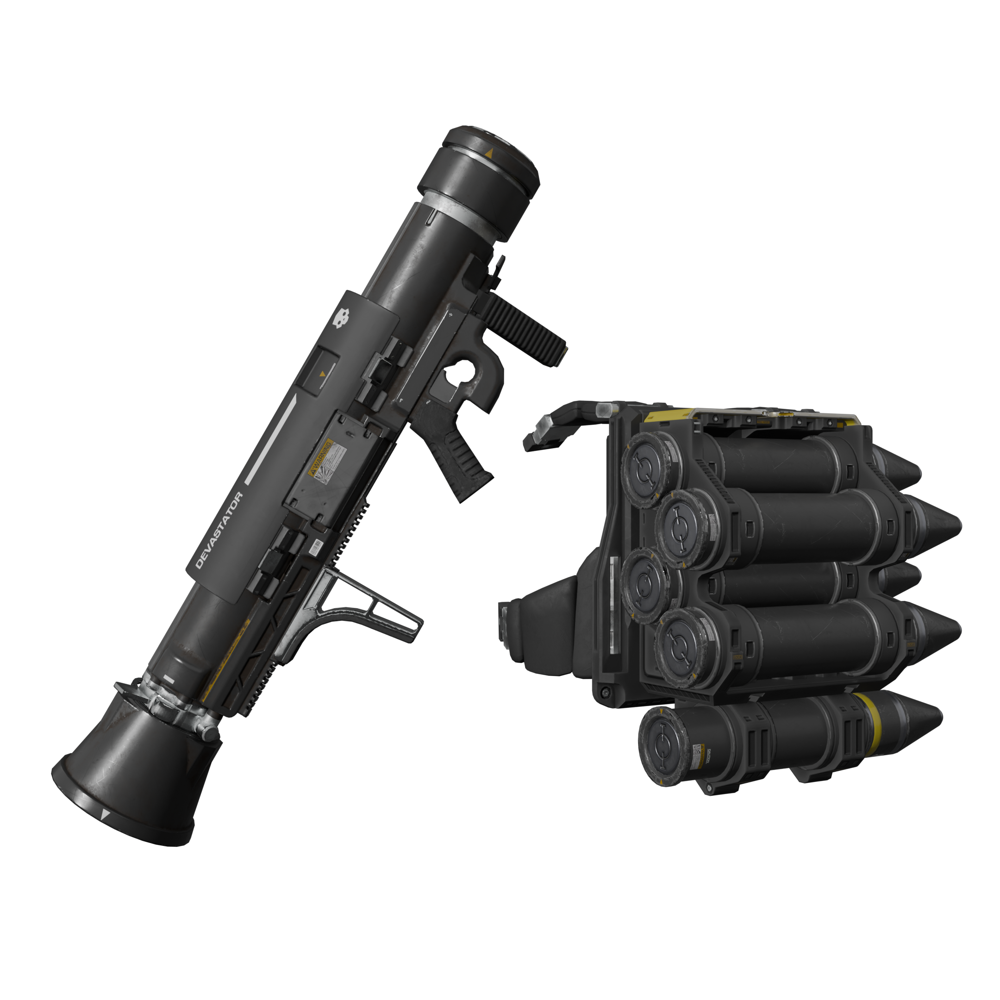
7.
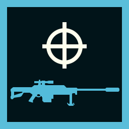
APW-1 Anti-Materiel RifleA very powerful sniper rifle with heavy armor pen. What more is there to say?
Unlocks at Level 1 and costs only 5000 Requisition Slips!
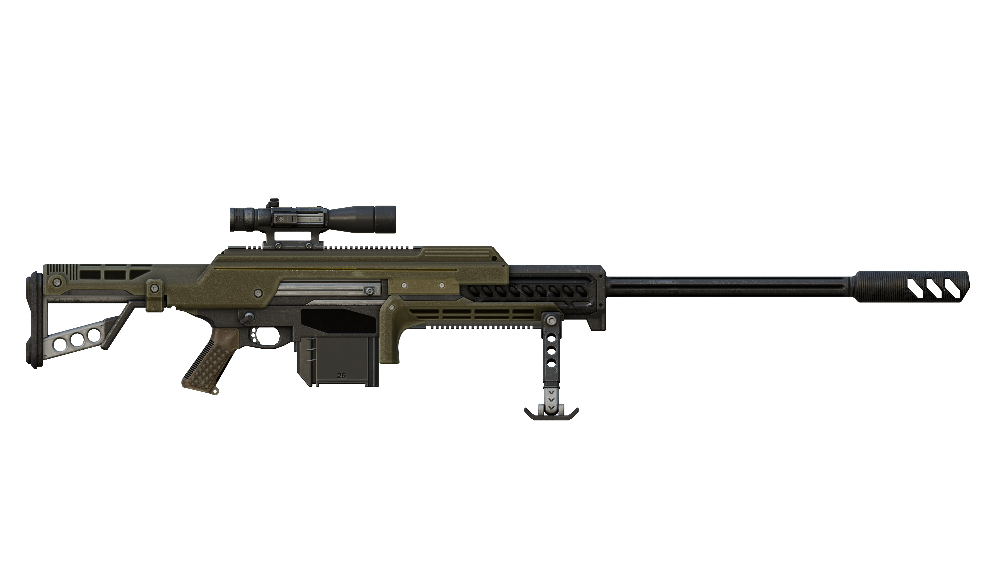
Situational
1. Eagle 500kg Bomb
Unlocked at Level 15 and costing 10000 Requisition Slips, the 500kg sky turd delivers a nasty punch, being able to kill basically anything relatively close to it. It's perfect for killing huge enemies, many enemies, and destroying structures.
Its only disadvantage is that you can drop only one before needing to rearm.
2.
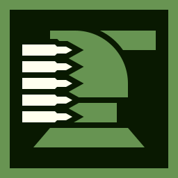
A/G-16 Gatling SentryAutomatic gatling with medium armor penetration goes brrr, and all enemies are soon gone. Unlocked at Level 5 and costing only 4000 Requisition Slips, there really isn't much else to say about this bad boy other than how great it is for any defensive missions or objectives.
3. MD-I4 Incendiary Mines
Once deployed, this covers a relatively large chunk of land around it with incendiary mines. What makes this better than the regular mines, you ask? Well, it's the fact they not only explode upon contact with the enemy but also set said enemy on fire, so if anything survives the initial blast, the fire will finish the job. Like a lot of these stratagems, you can relatively easily unlock it at Level 8, and it will cost you 4000 Requisition Slips, but it is more than worth the price.
Just be careful you don't step on the mines yourself!
4.
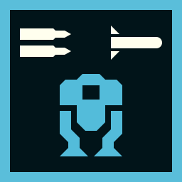
EXO-45 Patriot ExosuitArmed with a heavy machine gun in one arm and a missile launcher in the other, this exosuit is a perfect all-rounder for any scenario. The HMG takes care of the hordes, while the ML clears up the rest!
On the other hand, it has limited ammo reserves, it's slow, it is relatively easy to destroy, and you will be easily spotted when in one of these.
5.
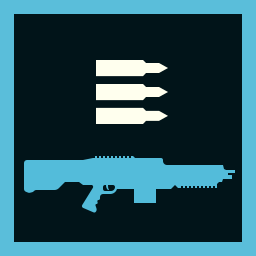
M-105 StalwartWith its light armor penetration and minimal unlock requirements (Level 1 and 3500 Requisition Slips), it was born for crowd control. Unlike the Machine Gun and the Heavy Machine Gun, the Stalwart does not feature a stationary reload, making it a superior choice for dealing with large hordes.
Unfortunately, it is only light armor pen, meaning you'll have a pretty hard time dealing with anything slightly bigger than a standard issue grunt.
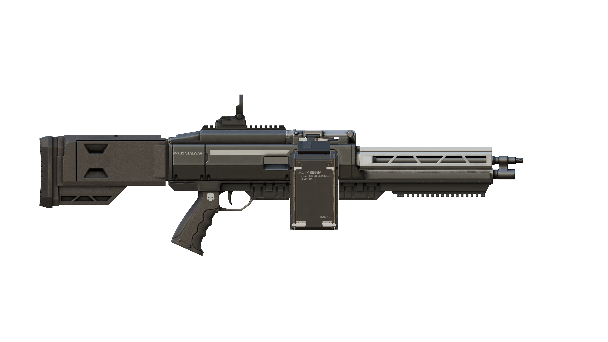
6.
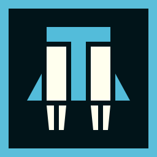
LIFT-850 Jump PackIf you ever find yourself cornered with no way out, this might just be your way out. Though it doesn't function like a jet/hover pack and it doesn't sustain you in the air for long, it does propel you upwards in one direction, allowing you to easily escape whoever or whatever is chasing you. Unlocked at Level 8 and costing only 6000 Requisition Slips, it makes this one of the best early game backpacks to bring with you. To maximize usefulness, try launching yourself from some high ground.
Just keep in mind the 15 second wait period before each launch and the fact you can't control where you go after the launch. It is also pretty easy to knock you into a ragdoll state if you trip while flying or you make contact with a projectile.
7.
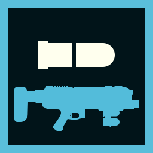
GL-21 Grenade LauncherUnlocked at Level 5, costing only 6000 Requisition Slips, this nifty support weapon is just perfect for eliminating small groups of enemies, destroying small to medium outpost structures, and just generally taking care of most types of enemies.
Honestly, the only downside that I can think of is its limited range.
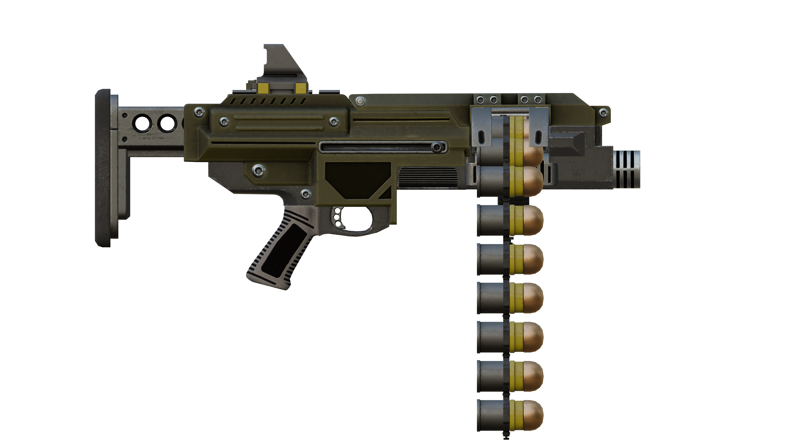
Conclusion
Suffice to say, Helldivers II has so many weapons and other utilities, even when taking into account only the free ones, that it would be impossible to fit everything in one list (technically two), so, instead, I only listed the equipment that I find myself using the most often. If I missed your fav; sorry, not sorry! ¯\_( ͡° ͜ʖ ͡°)_/¯
Until next time, cheers! :3
Disclaimer
All media and specific item information has been pulled from the Helldivers Wiki.